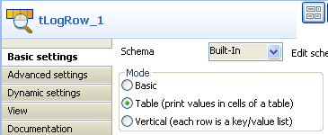
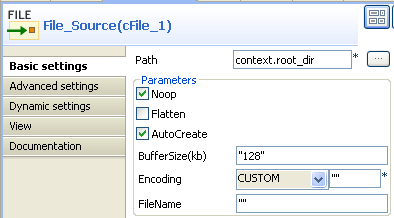
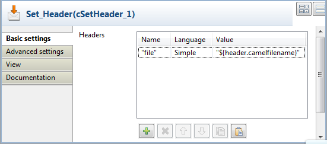
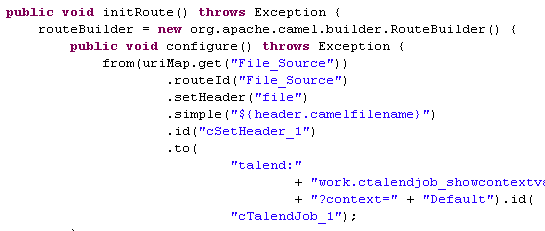

|
Component Family |
Processor | |
|
Function |
cTalendJob calls a Data Integration Job either from the repository or exported as an OSGI Bundle For ESB. | |
|
Purpose |
cTalendJob allows you to call a Data Integration Job in a Mediation Route. For more information on how to build a Job and how to export a Job as an OSGI Bundle for ESB, see Talend Open Studio for ESB User Guide. | |
|
Basic settings | Repository |
Select this option to call a Job from the Repository. |
| External | Select this option to call a Job that is exported as an OSGI Bundle For ESB. | |
| Job | This field appears when Repository is selected. Click [...] to show the Job Designs tree view and select the Job that you want to call in your Route. | |
| Version | This field appears when Repository is selected. Select the version of the Job if more than one verson of the Job is available. | |
|
Library |
This field appears when External is selected. Select the library you want to import from the list, or click on the [...] button to import the jar library of your Job. | |
|
|
Job |
This field appears when External
is selected. Type in the name of the package and the name of your
job separated by a point. For example:
route_project.txmlmap_0_1.tXMLMap To get
this naming, you can open the jar library of your Job, go to
OSGI-INF > blueprint and edit the job.xml file, the naming is
available in a bean node like |
|
|
Context |
Select from the list or type in the name of the context to use to execute your Job. |
|
Usage |
cTalendJob can be a start, middle or end component in a Route. It is mandatory that a tRouteInput component is used in the Data Integration Job. The reason for it is that this will prevent the referenced Job to start automatically when deployed in Talend Runtime. Instead it will only start when it gets called by the Route. | |
|
Limitation |
n/a | |
In this scenario, a Data Integration Job is built with a context variable defined in the Integration perspective. Then, a Route is established in the Mediation perspective with the message header defined the same as the context variable in the DI Job. Meanwhile, a cTalendJob component is deployed to call the DI Job and pass the value of the Route's message header to the DI Job's context variable.
In the Integration perspective, drop the following components from the Palette onto the workspace: tFixedFlowInput and tLogRow.
Link the components using a Row > Main connection.

Double-click tFixedFlowInput to open its Basic settings view in the Component tab.

Click the [...] button next to Edit schema to open the schema editor.

Click the [+] button to add a line.
Enter file as the column name and choose String as the data type.
Click OK to close the editor.
Select the Use Single Table option and enter context.file as the value.
Note that the context default with the variable file has been defined.
For more information about the context setup, see Talend Open Studio for ESB User Guide.
Double-click tLogRow to open its Basic settings view in the Component tab.
Select Table (print values in cells of a table) for a better display.
Press Ctrl+S to save the Job.
Export the Job as an OSGI Bundle for ESB.
Unzip the generated jar file.
In the Mediation perspective, drop the following components from the Palette onto the workspace: cFile, cSetHeader and cTalendJob, respectively labelled as File_Source, Set_Header and Call_DI-Job.
Link the components using a Row > Route connection.

Double-click cFile to open its Basic settings view in the Component tab.
In the Path field, enter the variable context.root_dir to specify the file path.
Keep other default settings as they are.
For more information about the context setup, see Talend Open Studio for ESB User Guide.
Double-click cSetHeader to open its Basic settings view in the Component tab.
Click [+] to add a row to the Headers table.
In the Name field, enter file, which is the same as the context variable of the DI Job.
Select Simple from the Language list.
In the Value field, enter ${header.camelfilename} to get the file name.
Double-click cTalendJob to open its Basic settings view in the Component tab.

Select the External option and click the [...] button to browse the generated jar file for the DI Job.
Go to the unzipped folder of the above JAR file and open the job.xml in the <DI_Job_JAR_Path>\OSGI-INF\blueprint folder, E:\cTalendJob_ShowContextVar-0.1\OSGI-INF\blueprint in this example.
Go to the bean tag and copy the content of the attribute class, work.ctalendjob_showcontextvar_0_1.cTalendJob_ShowContextVar in this example.
Paste it in the Job field.
Press Ctrl+S to save the Route.
Click the Code tab at the bottom of the design workspace to check the generated code.
As shown above,
File_Sourceprovides a file for the message exchange,cSetHeadersets a message header and uses the source file name as the header value, and finally that value is passed tocTalendJob_1for execution of the DI Job.Press F6 to execute the Route.
Put a file into the folder specified by context.root_dir, test mail.txt in this example.
The result below can be found.

As shown above, the source file name is displayed via tLogRow as the Route's message header value has been passed to the context variable of the DI Job.